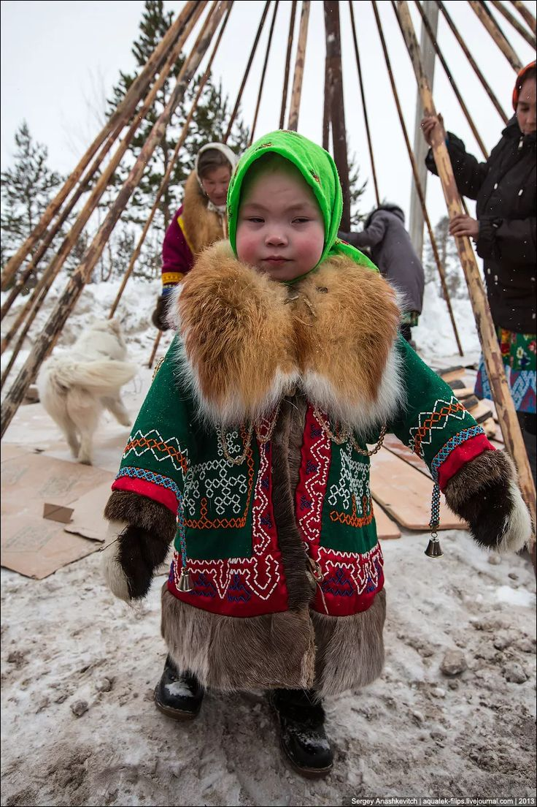
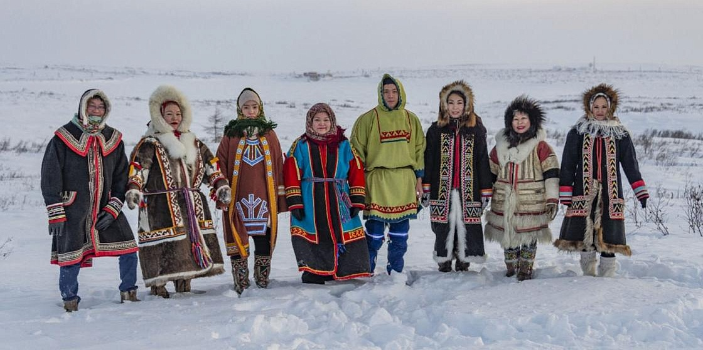
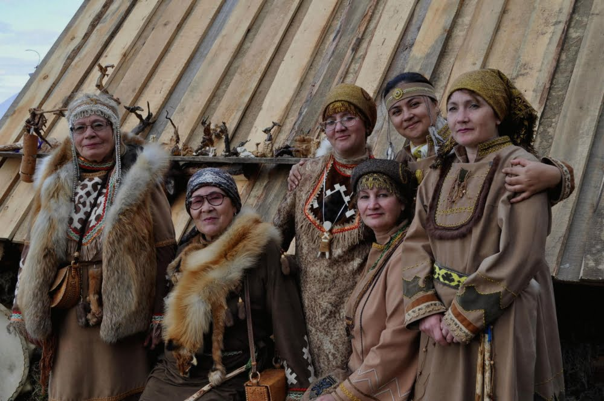

Салехард - культурный центр Ямала
Салехард — административный центр Ямало-Ненецкого автономного округа и важный культурный и экономический центр региона. Этот город расположен на севере России и является домом для коренных народов Севера, таких как ненцы, ханты и манси, а также для русскоязычного населения.
Традиционный образ жизни коренных народов включает оленеводство, охоту и рыболовство, а также создание уникальных ремесел из оленьих шкур, меха и замши, таких как одежда, утварь и украшения.
Регион богат природными ресурсами, среди которых нефть, газ, золото и уголь, что делает его важным центром добывающей промышленности и энергетики.
Коренные народы Ямала

Ханты
Угорский народ, также известный как остяки. Сохраняют традиционные промыслы и культурные традиции.

Ненцы
Коренной народ Севера, включая лесных ненцев. Традиционно занимаются оленеводством.

Селькупы
Третий коренной народ, проживающий в Салехарде и на территории Ямала.
I. ИСТОРИКО-КУЛЬТУРНЫЙ КОНТЕКСТ
1. История коренных народов
Ненцы и ханты — финно-угорские народы, заселявшие Западную Сибирь с доисторических времен. Археологические находки указывают, что их предки занимались охотой, рыболовством, собирательством еще в каменном веке.
В VIII–IX веках сформировались крупные племенные союзы, каждая из которых имела свою структуру, общинные институты и культурные традиции.
2. Образ жизни до современности
В эпоху кочевников — передвижение по сезонным маршрутам между местами охоты и рыболовства. Основные жилища — чихи (плоские юрты), сделанные из дерева, бересты, меха и костей.
Религия — важная часть культуры, связанная с поклонением природным силам и животным, а также с шаманизмом.
II. НОРМАТИВНОЕ И СОЦИАЛЬНОЕ УСТРОЙСТВО
Социальная структура Салехарда и Ямало-Ненецкого автономного округа в целом характеризуется многообразием и традиционными связями. В коренных общинах сохраняются клановые и родовые связи, которые играют важную роль в социальной организации и поддержании культурных традиций.
Важное место занимают шаманы — духовные лидеры, целители и посредники с духовным миром, сохраняющие связь с древними верованиями и обрядами.
Также в регионе распространены певцы-терапевты и хранители традиций, которые передают знания, обряды и ремесла из поколения в поколение, сохраняя уникальную культурную самобытность народа.
III. ТРАДИЦИОННЫЕ РЕМЁСЛА
Ткачество и орнаменты
Материалы:
береста, шерсть оленя, лыка, лубяные волокна
Техники
Вышивка бисером и меховыми полосками. Ткачество на ручных станках из нитей, полученных из растительных и животных материалов.
Узоры
Использование геометрических узоров — кривулы, зигзаги, ромбы, волнообразные линии. Символы солнца, воды, животных.
Продукты
Тульи, пояса, одеяла, коврики, покрывала с сакральными знаками.
Меховое и кожевенное дело
Основные меха:
олень, лось, бобр, белка, пушной зверь
Техники обработки
Снятие шкур, утепление, шитьё. Использование игл из кости для шитья и соединения меха.
Украшение
Вышивка, аппликация, меховые вставки с орнаментами.
Изделия
Меховые шубы, шапки, перчатки, сапоги с традиционными узорами.
Изделия из рогов и костей
Рога оленя и лося
Используются для изготовления ножей, игл, украшений, игрушек и предметов быта.
Кости
Для изготовления орудий — стрел, крючков, амулетов с символическим значением.
Одежда и украшения
Традиционный костюм
Меховые шубы, шапки, рукавицы, сапоги из меха оленя, лося и кожи.
Украшения
Вышивка, бисер, меховые аппликации как обозначение статуса и функций.
Обереги
Из серебра, бисера, костей, рогов, перьев с символикой солнца, звезд, животных.
IV. ОБРЯДЫ, КУЛЬТУРА И РИТУАЛЫ
Купальские обряды
Проводятся летом и включают пение, танцы, жертвы для поддержания гармонии с природой.
Обряды инициации
Для молодых мужчин и женщин помогают интеграции в сообщество и передаче традиций.
Обрядовые куклы
Делают из шерсти, меха, кости и используют в ритуалах как символы духов.
Шаманизм
Шаманы имеют особые костюмы, маски и инструменты (бубны, бамбуковые трубы) для общения с духовным миром.
V. СОВРЕМЕННОЕ РЕМЁСЛЕННОЕ ИСКУССТВО И ЕГО РАЗВИТИЕ
Популяризация
Проводятся фестивали, такие как праздники оленеводов, этнографические дни ханты и манси. Молодёжь участвует в программах обучения и сохранения ремёсел.
В туристических центрах продаются сувениры: меховые изделия, бисерные украшения, костюмы и аксессуары с национальными узорами.
Торговля и экспорт
Изделия пользуются спросом среди туристов и коллекционеров. Популярные товары: меховые шубы, бисерные украшения, резные деревянные предметы.
Вся продукция сохраняет национальную символику, что способствует сохранению культуры.
VI. ЗНАЧЕНИЕ И СОХРАНЕНИЕ ТРАДИЦИЙ
Важна задача сохранения языка, обрядов и ремёсел. Государственные программы финансируют ремесленные мастерские и культурные инициативы.
Развивается молодежное движение по обучению новым и традиционным ремёслам. Ведётся работа по созданию брендовых изделий для популяризации культуры и экономики коренных народов Ямала.